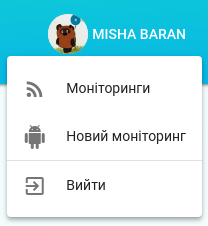
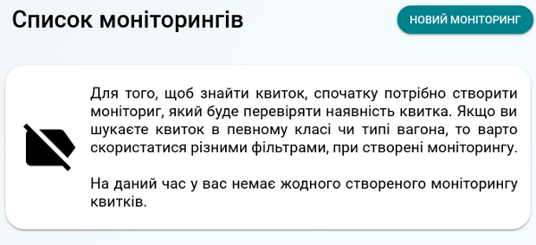

Як користуватися сервісом RailwayTicket
За допомогою сервісу RailwayTicket можна знаходити залізничні квитоки на всі напрямки по Україні і отримувати сповіщення про наявність вільного квитка в месенджер Telegram.
exit_to_app
Початок роботи. Вхід
Перш ніж почати створювати моніторинги і шукати квитки, потрібно увійти в сервіс, для цього натиснути на кнопку "вхід через Telegram", успішно виконавши дію, вам відкриється вікно "вибір аккаунта" в якому потрібно ввести номер телефону, до якого прикріплений ваш акаунт, для підтвердження вибору натисніть кнопку "Next".
У ваш чат в Telegram прийшло підтвердженн, яке потрібно схвалити, натиснувши кнопку "Confirm" і виконуєте останній крок входу, тисните на кнопку "Accept" у вікні "вибір аккаунта".
Виконавши усю постідовність простих дій вам відкриється список ваших моніторингів.
power_input
Верхня панель
У верхній частині вікна розміщена інформаційно-керуюча панель.
Зліва на панелі знаходиться кнопка "home", яка напрваляє вас на головну сторінку (список моніторингів), причому ця кнопка однаково працює на усіх сторінках.
Зправа на панелі знаходиться кнопка "user menu", клікнувши по які вам відкриється меню користувача. У меню доступно 4 функції: список моніторингів, створення нового моніторингу, допомога і вихід із сервісу.

home
Home сторінка

home
Home сторінка
Успішно пройшовши аутентифікацію вам відкриється сторінка списку усіх моніторингів.
Дана сторінка - головна(домашня). За допомогою меню звідси можна попасти на інші сторінки сервісу,
такі як: вхід, новий моніторинг, редагування моніторингу і допомога.
Якщо ви користуєтеся сервісом перший раз або ви видалили усі свої моніторинги то у вас відображається повідомлення,
створіть моніторинг. Щоб створити новий моніторинг, натисність кнопку "новий моніторинг" або виберіть аналогічний
пункт із меню користувача, що на панелі у правому верхньому куті монітору, після чого ви перейдети на сторінку створення.
library_add
Новий моніториг
library_add
Новий моніториг
Перш за все, щоб створити новий моніторинг потрібно заповнити поля: місто звідки, місто куди і дата відправлення поїзда.
Вказавши основну інформацію, внизу сторінки ставне активною кнопка "створити", натиснувши яку сервіс створить
активний моніторинг залізничного квитку.
В більшості випадків виконання перелічених вище дій достатньо для пошуку потрібного квитка, проте, якщо вам цього не достатньо
або ви надаєте перевагу певному класу вагона чи типу місця, тоді для вас доступні цілий ряд фільтрів.
Застосування фільтрів зводиться до встановлення прапорців, навпроти відповідних назв класів вагонів і типів місць.
departure_board
Створений моніторинг
Створивши моніторинг, буде відображений у вас на головній сторінці.
Моніторинг містить всі важливі дані, зокрема: міста звіди і куди ви шукаєте квиток, дата відправлення, кількість квитків,
задані вами класи вагонів і типи місць(квитки тільки з такими вагонами і місцями буде шукати сервіс).
Для зручності керування моніторингом вам доступно 3 основні кнопки:
- редагувати, при натиску на яку відкриється вікно редагування в якому можлива зміна усіх параметрів пошуку квитка,
на вигляд сторінка така ж як і сторінка "стовення";
- показник активності, показує чи активний моніторинг в даний час, а також дозволяє перевести моніторинг у
неактивний стан, при кліку;
- видалити, кнопка видалення моніторингу із списку вашого списку і припинити пошук квитків.
bug_report
Поширені проблеми